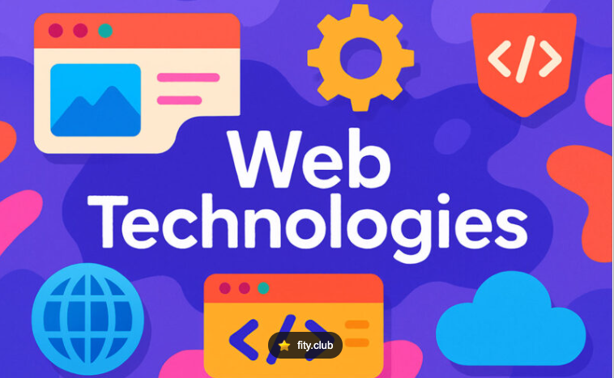

Exploring the history, development, and evolution of the World Wide Web
How web browsers developed
Web browsers developed alongside the World Wide Web. In ,
Tim Berners-Lee proposed the Web at CERN to help researchers share information. By late , he built the first web server and browser, called WorldWideWeb.
CERN and the early Web
The first browser was developed on a NeXT computer and allowed people to follow links between documents. In , CERN made the World Wide Web technology available on a royalty-free basis. This allowed people to use and develop the technology without paying licence fees (CERN, n.d.).
Mosaic: images alongside text
Mosaic was released in when Marc Andreessen and Eric Bina developed NCSA Mosaic. By displaying images alongside text, Mosaic helped make the Web easier to use and more popular (NCSA, n.d.).
Netscape & The Browser Wars
Netscape Navigator followed in , and quickly became popular. Its competition with Microsoft's Internet Explorer became known as the "browser wars". During this period, browsers added features and support for technologies such as JavaScript and CSS (Mozilla, n.d.).
Explore a browser or web technology
Look up summaries of web technologies, browsers, and pioneers on Wikipedia. Choose a featured topic or enter an article name. If the lookup fails, an error message explains what to try next.
Start with a featured topic, such as Tim Berners-Lee or NCSA Mosaic.
Milestones in Browser Development
Filter the milestones below in real-time using instant client-side table searching:
Key chronological milestones in the evolution of web browsers
Browser Name
Launch Year
Primary Developer / Organization
Major Historical Contribution
WorldWideWeb
Tim Berners-Lee (CERN)
First web browser and WYSIWYG hypertext editor.
NCSA Mosaic
NCSA (Marc Andreessen & Eric Bina)
First widespread browser displaying inline images.
Netscape Navigator
Netscape Communications
Pioneered JavaScript, cookies, and modern web interaction.
Internet Explorer
Microsoft
Bundled with Windows; dominated market during early 2000s.
Mozilla Firefox
Mozilla Foundation
Championed open-source standards and tabbed browsing.
Google Chrome
Google
Introduced V8 JavaScript engine and multiprocess tab architecture.
Videos and images
The evolution of web apps
Watch Dylan Beattie explain how web apps have changed:
Web technologies illustration

Figure 1: An illustration of web technologies and client-server connections.
Try some JavaScript
Open the sections below for a short explanation, then try the buttons to see JavaScript in action.
HTML, CSS and JavaScript
HTML gives a page its structure and content. CSS changes how it looks. JavaScript makes it respond to actions such as clicking a button.
// Citation: Class toggle adapted from W3Schools JS classList:
document.documentElement.dataset.bsTheme = "dark";
Getting data and updating a page
The fetch() function gets data from an API. JavaScript can then use document.createElement() to add elements and textContent to display the results without reloading the page.
// Citation: Fetch API async/await pattern adapted from W3Schools:
async function loadData(url) {
const res = await fetch(url);
const data = await res.json();
return data;
}
Using let and const
Use let when a variable needs to be reassigned and const when it does not. Both are limited to the block where they are declared, such as the code inside an if statement.